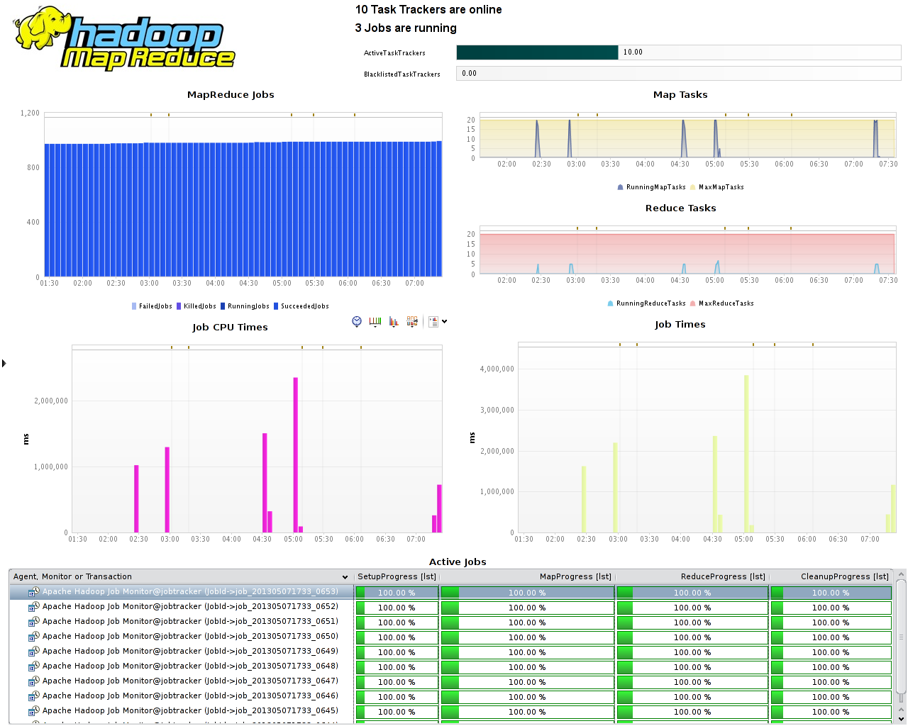
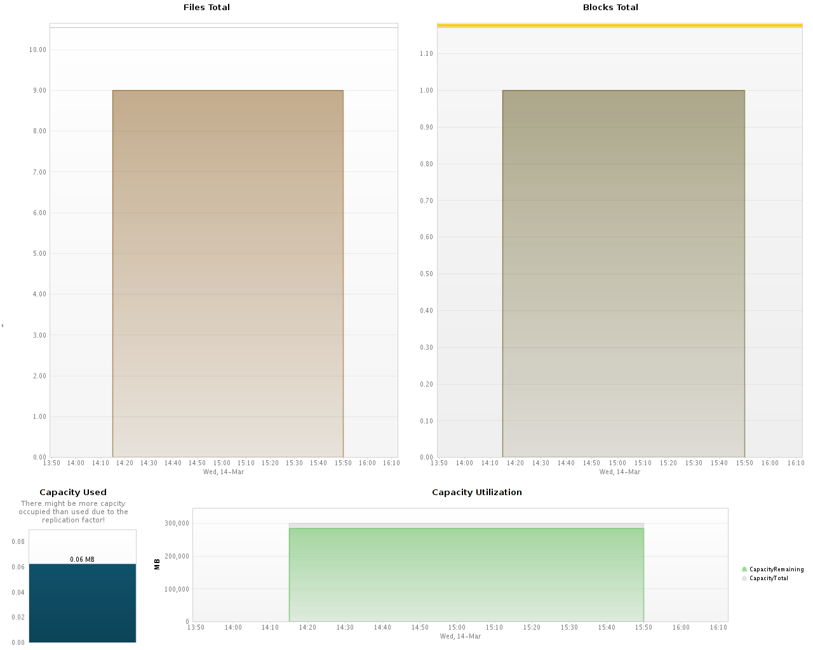
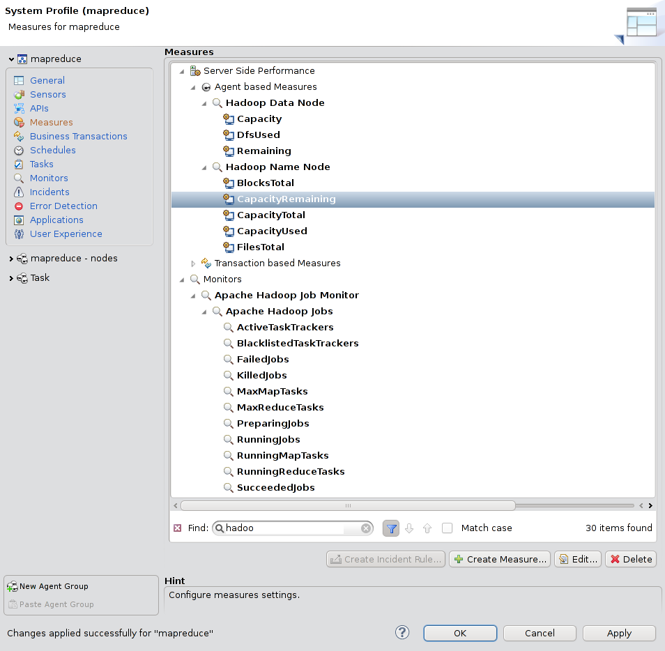
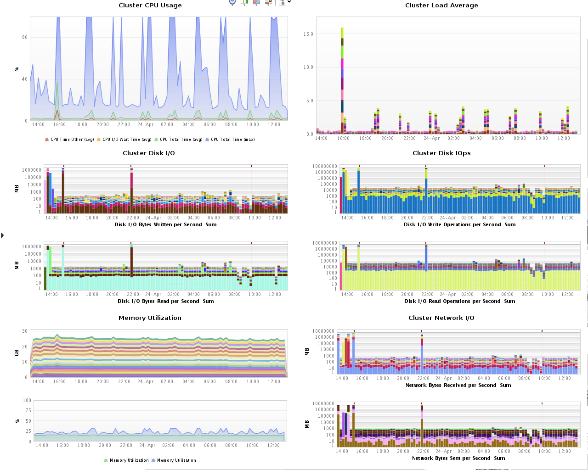

Apache Hadoop and MapReduce FastPack
Table of Contents (Start)
Apache Hadoop and MapReduce FastPack
 Compuware APM dynaTrace 5.5 has built-in support for Hadoop MapReduce. This FastPack provides additional dashboards and a Job Monitor for further monitoring and analysis.
Compuware APM dynaTrace 5.5 has built-in support for Hadoop MapReduce. This FastPack provides additional dashboards and a Job Monitor for further monitoring and analysis.
Fast Pack Details
|
Name |
Apache Hadoop FastPack |
|
Version |
5.5.0.5225, 5.6.0.5802 |
|
dynaTrace Version |
5.5, 5.6 |
|
Author |
Michael Kopp |
|
License |
|
|
Support |
|
|
FastPack Contents dynaTrace 5.5 |
Fastpack Download for dynaTrace 5.5 contains:
Fastpack Download for dynaTrace 5.6 additionally contains support for:
|
If you have any questions, please don't hesitate to ask in our Plugins and Extension Forum.
Hadoop MapReduce Jobs

The MapReduce Dashboard gives an overview of the currently running Jobs and how much the Hadoop Environment is utilized. In addition it shows the specific running and completed jobs (lower pane). This dashboard relies on the Job Monitor.
HDFS (NameNode) Statistics

The HDFS (NameNode) Statistics Dashboard gives an overview over the most important HDFS Nodes. It shows the summary as seen by the name node. In addition the user can put the metrics for specific data nodes on separate dashboards if that is desired.

Hadoop Cluster Overview

The Hadoop Cluster Overview shows a consolidated view of the cluster resource usage over time. It gives a sense of how much CPU is consumed and the load average of the whole cluster. It does the same for Disk and Network I/I as well as memory. It serves the same purpose as Ganglia dashboards do.
FastPack Information
dynaTrace 5.5. has Hadoop MapReduce support built in. This fastpack contains three additional Dashboards, a Job Monitor and two Metric Groups for the Name Node and Data Node respectively. dynaTrace can monitor any JMX attribute available withing the Hadoop nodes in addition to those supplied in this fastpack.
Installation
You should first inject Agents into your Hadoop environment and create a new system profile. See the documentation on how to do this.
Next just download and import the FastPack on your dynaTrace Server (see Plugin Management).
As a last step setup the Job Monitor, give it the name "Apache Hadoop Job Monitor" to make all dashboards work out of the box.